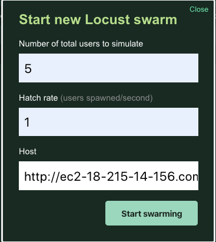

06. Exercise: Locust Load Testing
Header
Exercise: Locust Load Testing
Load testing is a critical part of developing a reliable Microservice. This allows you to verify that the application can perform at scale. In this exercise, you will set up a basic load test with locust.
Docker-Flask-Locust
Exercise: Locust Load Testing
Task Description:
Below this task list is a walkthrough of some of what was shown in the video. Use that as a helpful resource while you work through this exercise.
Task Feedback:
Great job!
Untitled
Creating a Locust Loadtest with Flask
One powerful way to create a simple loadtest is with Locust and Flask. Here is an example of a simple flask hello world app. The entire source code is found here.
from flask import Flask
app = Flask(__name__)
@app.route('/')
def hello_world():
return 'Hello, World!'
if __name__ == "__main__":
app.run(host='0.0.0.0', port=8080, debug=True)The loadtest file is very simple to configure. Notice the index function calls into the main, and only flask route.
from locust import HttpLocust, TaskSet, between
def index(l):
l.client.get("/")
class UserBehavior(TaskSet):
tasks = {index: 1}
class WebsiteUser(HttpLocust):
task_set = UserBehavior
wait_time = between(5.0, 9.0)The login screen requires the number of users and also hostname and port. In our case this will be the port 8080.

You can see how locust works when it runs.